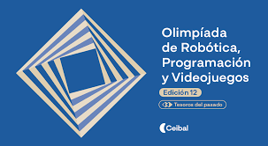

El Colegio Inmaculada Concepción Vascos está ubicado sobre la calle Mercedes del barrio Centro, Departamento de Montevideo. Fue fundado en el año 1867 por la Congregación de los Padres Betharramitas.


El Colegio Inmaculada Concepción Vascos está ubicado sobre la calle Mercedes del barrio Centro, Departamento de Montevideo. Fue fundado en el año 1867 por la Congregación de los Padres Betharramitas.

La Olimpíada de Robótica, Programación y Videojuegos es un espacio en el que se comparten y destacan proyectos que utilizan tecnologías. Este año, la temática de esta edición es Tesoros del Pasado.